点击点亮蜡烛
缅怀为国家发展做出卓越贡献的先驱者，他们的精神永远照亮我们前行的道路
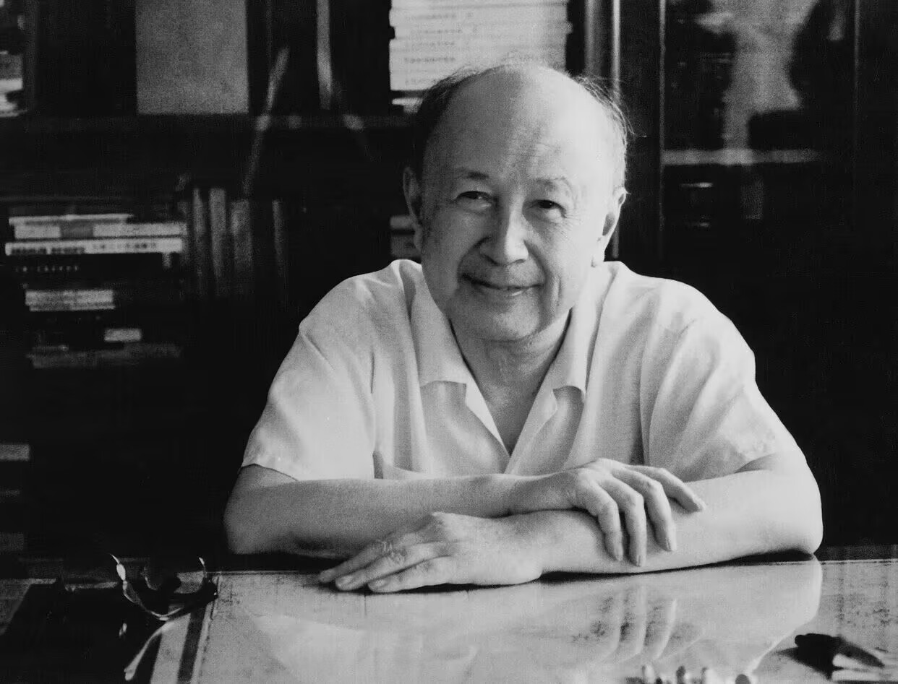
中国航天之父、两弹一星元勋。其纪念地为钱学森故居，位于浙江省杭州市上城区方谷园2号。
杂交水稻研究的开创者，为我国粮食安全等作出巨大贡献。他长眠于长沙唐人万寿园，这里是人们缅怀他的重要场所。
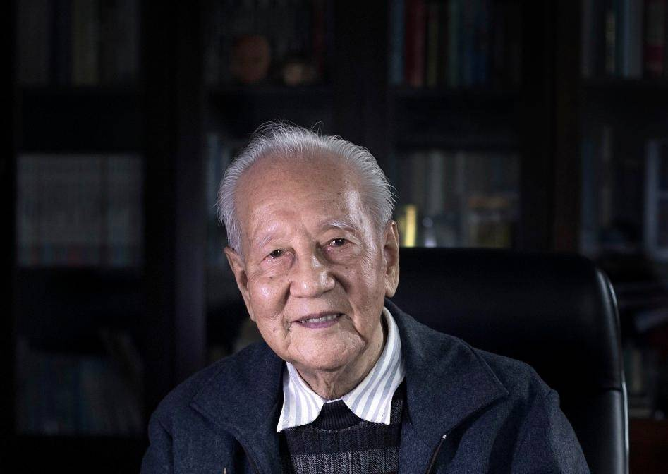
中国第一代核潜艇工程总设计师。2025年6月29日，黄旭华的骨灰归葬故乡广东汕尾红海湾，其陵园里有三块碑石，镌刻着他的传奇一生。
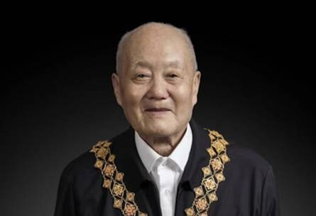
西北野战军特等功臣。张富清初心纪念园位于湖北省来凤县三胡乡狮子桥水利水电工程旁，园内有张富清墓，旁边还建有张富清先进事迹展馆。
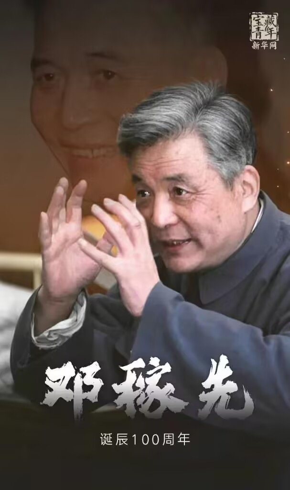
中国核武器研制工作的开拓者和奠基者，被誉为"两弹元勋"。邓稼先生平事迹陈列馆位于安徽省安庆市怀宁县，展示了他为祖国核事业奉献的一生。
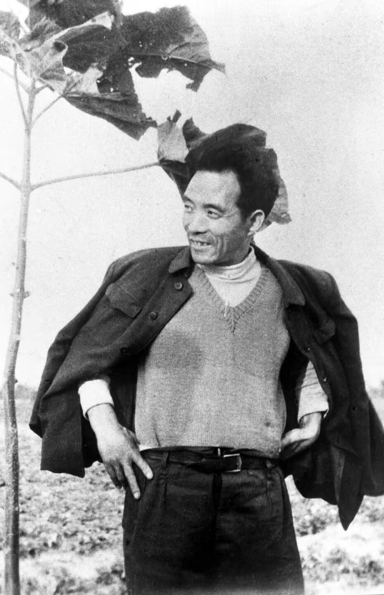
县委书记的榜样，全心全意为人民服务的典范。焦裕禄纪念馆位于河南省兰考县，是全国人民学习他无私奉献精神的重要基地。
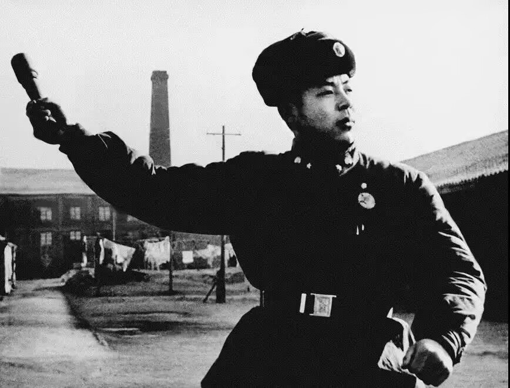
伟大的共产主义战士，全心全意为人民服务的楷模。雷锋纪念馆位于湖南省长沙市，是全国爱国主义教育示范基地。
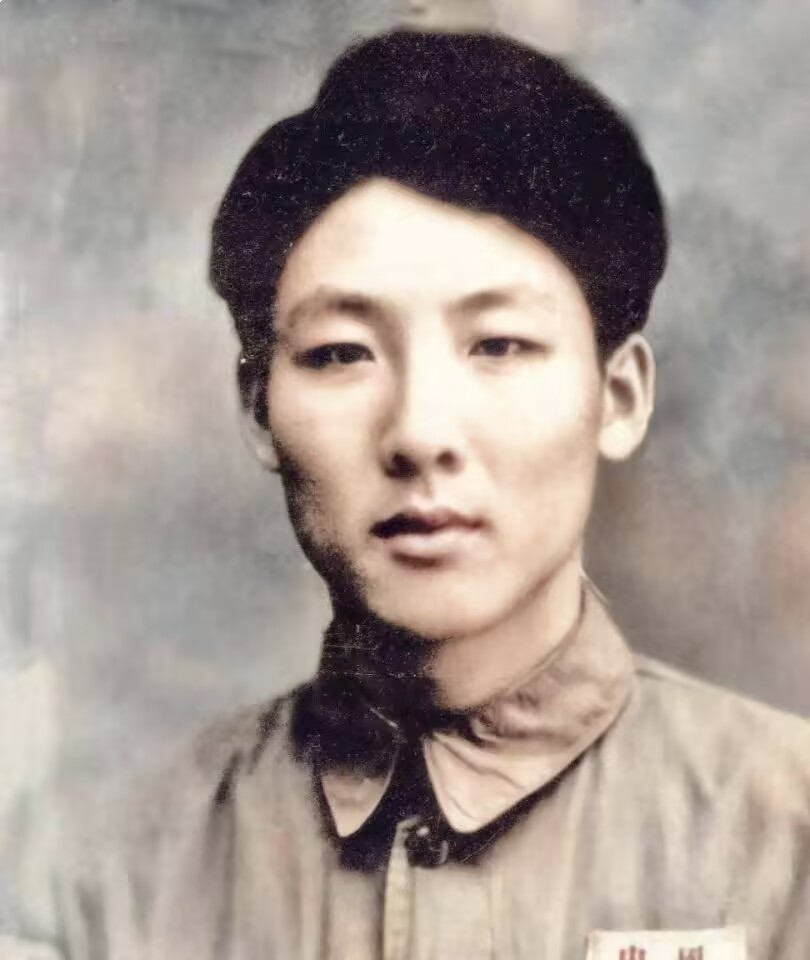
中国探月工程总设计师，北斗导航系统首任总设计师。孙家栋院士纪念馆位于辽宁省瓦房店市，展示了他为中国航天事业作出的卓越贡献。
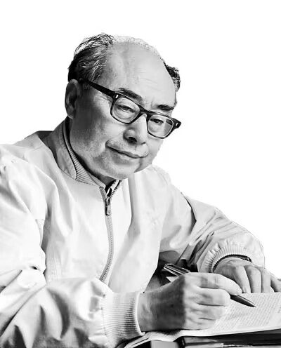
中国氢弹之父，核物理学家。于敏纪念馆位于天津市宁河区，展示了他为中国核武器事业发展作出的不可磨灭的贡献。
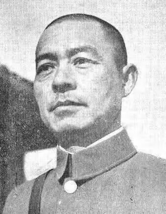
抗日战争中牺牲的最高级别将领，被誉为"抗战军人之魂"。张自忠将军纪念馆位于湖北省宜城市，是国家级抗战纪念设施。
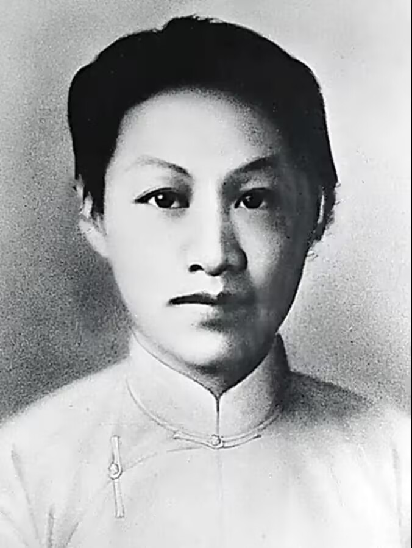
抗日民族英雄，东北抗日联军第三军二团政委。赵一曼纪念馆位于四川省宜宾市，展示了她的英勇事迹和坚定信念。
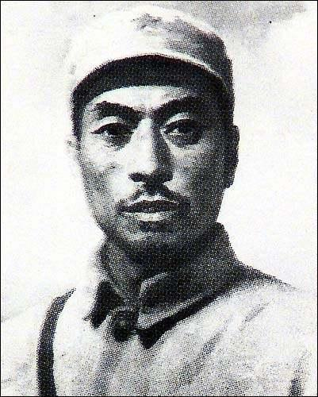
东北抗日联军的主要创建者和领导人之一。杨靖宇将军纪念馆位于吉林省通化市，是国家级爱国主义教育示范基地。